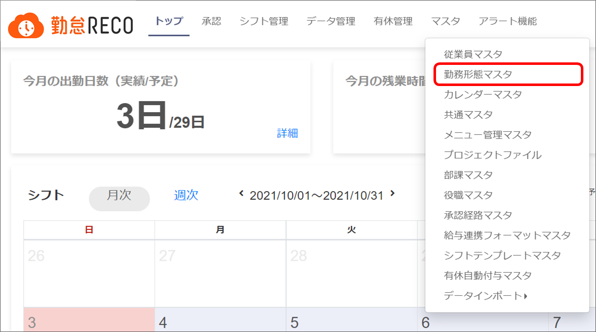
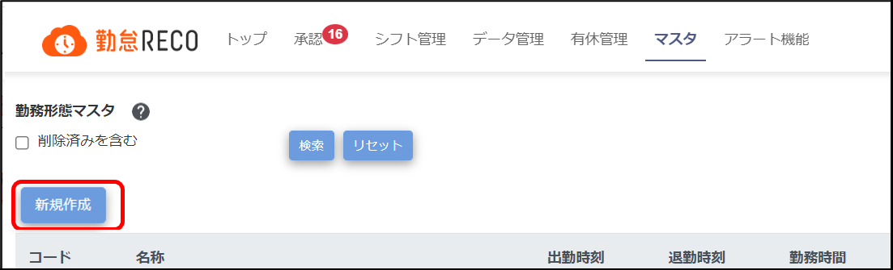
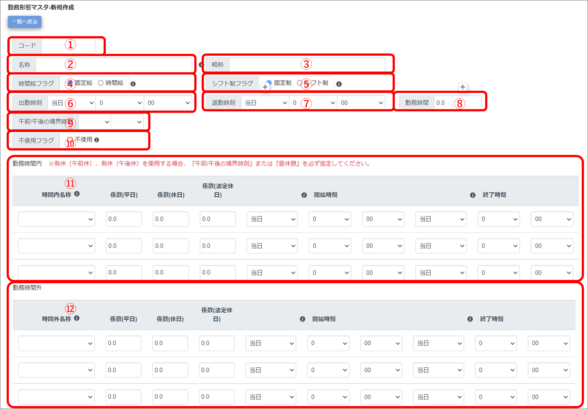
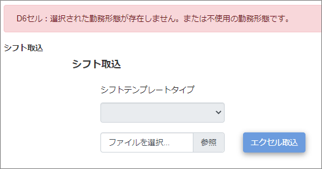
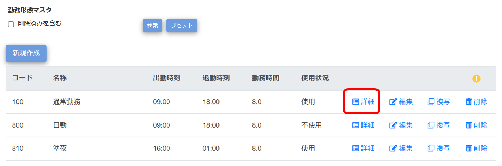
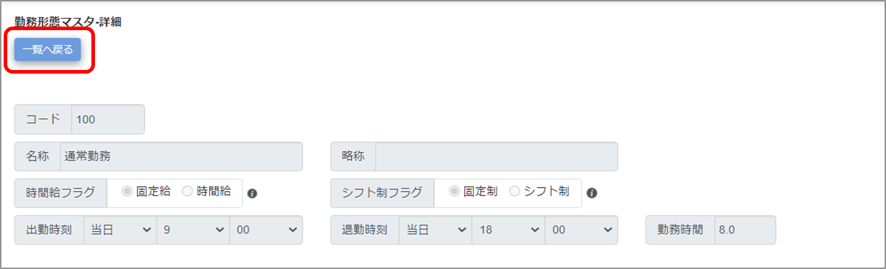
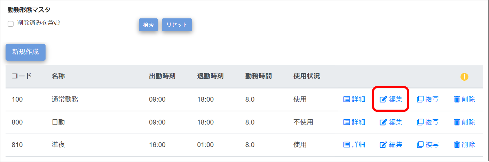
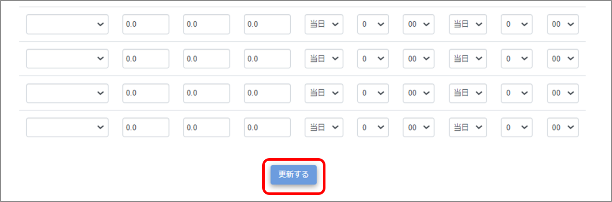
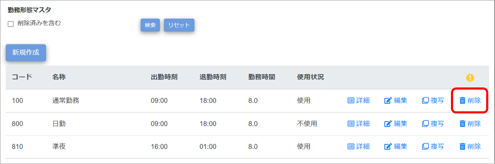

勤務形態の登録
就業規則に沿った勤務形態を登録します。
勤務時間管理のため、勤務形態ごとに勤務時間・勤務時間外などの詳細を設定してください。
登録は［勤務形態マスタ］画面で実施します。
ご注意 |
勤務形態マスタを操作できるのは、システム管理者アカウントのみです。 |
|---|
 勤怠RECO［管理用］操作マニュアル
勤怠RECO［管理用］操作マニュアル
勤怠RECO［管理用］
操作マニュアル
就業規則に沿った勤務形態を登録します。
勤務時間管理のため、勤務形態ごとに勤務時間・勤務時間外などの詳細を設定してください。
登録は［勤務形態マスタ］画面で実施します。
ご注意 |
勤務形態マスタを操作できるのは、システム管理者アカウントのみです。 |
|---|
［マスタ］をクリックし、［勤務形態マスタ］をクリックする

［勤務形態マスタ］画面が表示されます。
［新規作成］ボタンをクリックする

「勤務形態マスタ-新規作成」画面が表示されます。
ヒント |
|
|---|
各項目を入力する

コード
勤務形態のコードを入力します。設定後の変更はできません。（一意／最大255文字）
マスタ一覧ではコード順でマスタが表示されます。
名称
勤務形態名称を入力します（最大255文字）
略称
勤務形態名称の略称を入力します。シフト勤務入力で選択する際に使用します（最大255文字）。
時間給フラグ
時間給制を適用するかどうかを選択します。
シフト制フラグ
シフト制を適用するかどうかを選択します。
ヒント |
勤務形態マスタの「時間給フラグ」「シフト制フラグ」は、次のように登録します。 【例】
|
|---|
出勤時刻
出勤時刻を選択します。
退勤時刻
退勤時刻を選択します。日をまたぐ場合は「翌日」を選択します。
勤務時間
所定労働時間（定時出社、退社した場合の勤務時間）を「0.00」単位（10進法）で入力します。
※休憩時間は含めません。
※小数点第3位は切り上げて入力します。
【例】7時間50分を設定したい場合：7.83333･･･ ⇒「7.84」を入力。
午前/午後の境界時刻
半日有休（午前休・午後休）を取得する際の境界時刻を設定します。昼休憩のない短時間の勤務形態で、半日有休を取得したい場合にご利用いただけます。
境界時刻を設定しない場合は、昼休憩の開始時刻までが午前休、終了時刻からが午後休となります。
ご注意 |
・昼休憩と境界時刻がどちらも設定されている場合は、境界時刻の設定が優先されます。 ・昼休憩と境界時刻がどちらも設定されていない場合は、半日有休を取得できません。 ・半日有休（午前休・午後休）は、1日有休に対して0.5日消化されます。8時間勤務と6時間勤務が混在する従業員が半日有休を取得した場合、どちらの勤務形態で取得しても0.5日扱いとなるため、ご注意ください。 |
|---|
不使用フラグ
不要になった勤務形態マスタを「不使用」にする場合に選択します。
不使用に設定された勤務形態は打刻画面、勤怠実績モーダル、シフト編集の選択肢に表示されなくなります。また、シフト取込で不使用の勤務形態を使用して取込を行った場合はエラーとなります。

ヒント |
一度登録された勤務実績、シフトについては不使用フラグ設定後でも勤務形態が選択可能です。 |
|---|
ご注意 |
訂正等で勤怠修正を行う場合がありますので、不使用フラグは勤怠確定処理後に設定してください。 |
|---|
勤務時間内
出勤時刻から退勤時刻までの勤務形態を入力します。
「勤務時間内」の1行目の開始時刻は、「出勤時刻」の時間が自動で反映されます。2行目以降の開始時刻は、1つ前の行の終了時刻が自動で反映されます。
【例】
午前勤務 9:00~12:00
昼休憩 12:00~13:00
午後勤務 13:00~18:00
勤務時間外
退勤時刻以降、および出勤時刻以前の勤務形態を入力します。
「勤務時間外」の1行目の開始時刻は、「退勤時刻」の時間が自動で反映されます。2行目以降の開始時刻は、1つ前の行の終了時刻が自動で反映されます。
【例】
残業 18:00~22:00
深夜残業 22:00~翌日5:00
残業 翌日5:00~翌日7:00
休憩（残業） 翌日7:00~翌日9:00
※始業時刻より前の打刻を労働時間から除外したい場合、該当時間帯に「休憩（残業）」を設定すると除外出来ます。
ヒント |
当日の勤務開始時刻から翌日の勤務開始時刻まで、24時間分の勤務形態を作成してください。 |
|---|
入力内容を確認し、［登録する］ボタンをクリックする
画面上部に「登録が完了しました。」とメッセージが表示され、画面が「勤務形態マスタ-詳細」画面に切り替わり勤務形態マスタが登録されます。
ヒント |
［一覧へ戻る］ボタンをクリックすると、入力した内容を保存せずに「勤務形態マスタ」画面へ戻ります。途中まで入力した内容を保存したい場合は、［登録する］ボタンをクリックしてから、後で編集してすべての登録を完了させてください。編集方法について詳しくは、「勤務形態マスタを確認・編集する」を参照してください。 |
|---|
登録済みの勤務形態マスタ情報を確認したり、修正して上書きしたりします。
［マスタ］をクリックし、［勤務形態マスタ］をクリックする
「勤務形態マスタ」画面（登録済みの勤務形態マスタ一覧）が表示されます。
情報を確認したい勤務形態の行の［詳細］をクリックする

「勤務形態マスタ-詳細」画面が表示されます。
削除した勤務形態を検索する場合は「削除済みを含む」にチェックを付けます。
情報を確認し、［一覧へ戻る］ボタンをクリックする

登録済みの勤務形態マスタ一覧が表示されます。
修正が必要な場合は、勤務形態の行の［編集］をクリックする

「勤務形態マスタ-編集」画面が表示されます。
修正したい項目を編集する
修正内容を確認し、画面下の［更新する］ボタンをクリックする

画面上部に「更新が完了しました。」とメッセージが表示されたら、勤務形態マスタの修正情報の登録は完了です。
ご注意 |
利用実績のある「勤務形態」は削除できません。 過去に利用していたり現在利用中の勤務形態を削除すると、打刻画面や勤怠実績画面で勤務形態が無くなるため、削除できない仕様です。 不要になった勤務形態マスタは「不使用」に変更してください。 |
|---|
［マスタ］をクリックし、［勤務形態マスタ］をクリックする
「勤務形態マスタ」画面が表示されます。
削除したい勤務形態の行の［削除］をクリックする

画面上部に「削除が完了しました。」とメッセージが表示され、削除した勤務形態の行が一覧から消えます。
削除を元に戻したい場合は、「削除済みを含む」にチェックを付けて検索し、「勤務形態マスタ-編集」画面で削除済みチェックを外して登録してください。